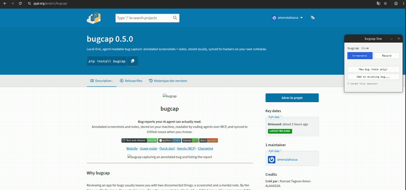

Bug reports your AI agent can read.
Snap an annotated screenshot of what's broken and jot down what you saw. bugcap keeps it on your machine, lets any coding agent read the picture, and syncs to GitHub issues when you're ready.

Why it exists
A screenshot and a mental note of what went wrong is two disconnected things. By the time you file the issue, the context is gone, and the picture is the part an agent most needs to see.
Capture at the moment
Annotated screenshots through flameshot, satty or the macOS tool. Or import existing images, globs and URLs.
A local record
A SQLite index and PNGs on disk. Nothing depends on GitHub or any service being reachable.
Readable by agents
A stdio MCP server exposes reports, including the image bytes, to Claude Code and other agents.
Sync on your schedule
Push a report to GitHub: an issue with the usual inline image, plus a plain copy agents can read.
Record what happens
Capture a short screen recording as an animated GIF, a video or keyframes, with size and duration caps.
Triage in a browser
A local dashboard, bound to 127.0.0.1 by default, to browse, filter, and change statuses.
Quick start
Three commands from install to your first report.
-
Install
pipx install 'bugcap[mcp] @ git+https://github.com/amenalahassa/bugcap' -
Check your capture tool
bugcap setup --yes # detects or installs flameshot / satty / screencapture -
Capture a bug
bugcap capture --title "Login fails" --note "Error toast after submit" --tag auth
Works with your agent
Add bugcap as an MCP server, then ask your agent to look at a report.
claude mcp add bugcap -- bugcap mcp-serveThe server exposes six tools: list_reports, get_report (with the screenshot), request_screenshot, pull_issues, attach_image and update_notes.
Why the local copy matters
GitHub's attachment CDN only resolves in a real browser session. No token can fetch it, so an agent using gh sees the issue text but never the picture.
gh api repos/<owner>/<repo>/contents/<path>.